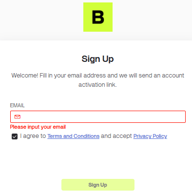
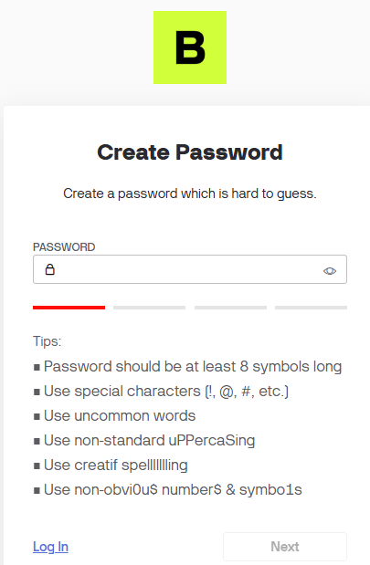
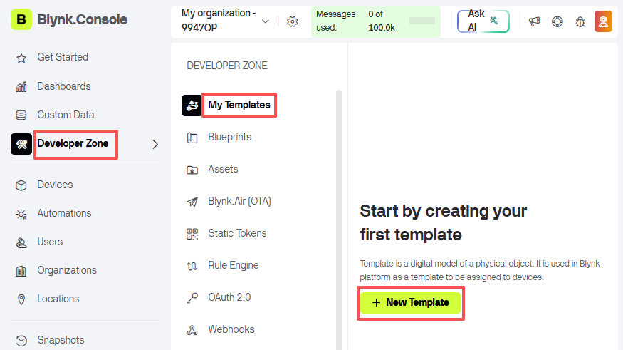
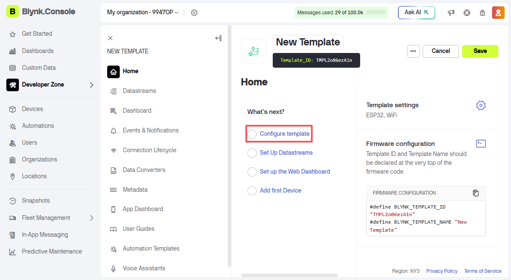
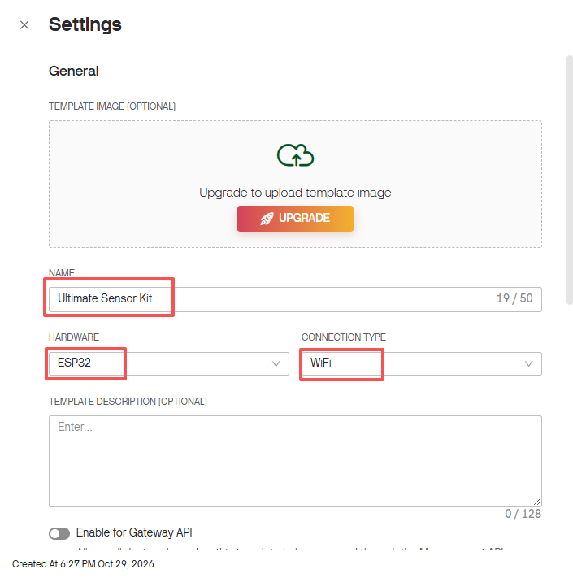
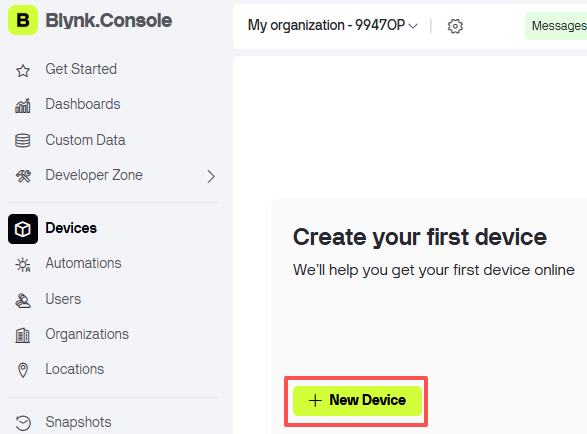
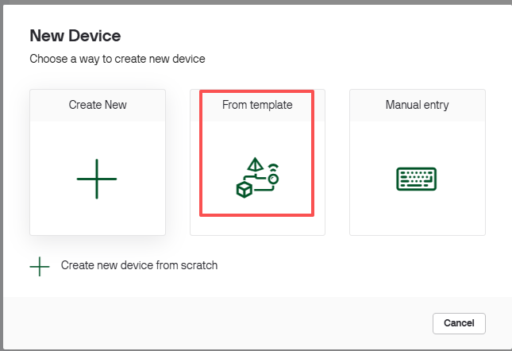
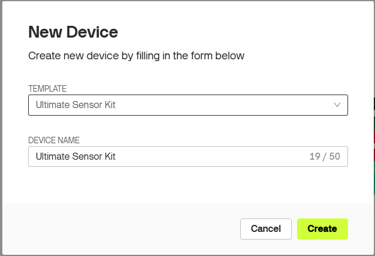
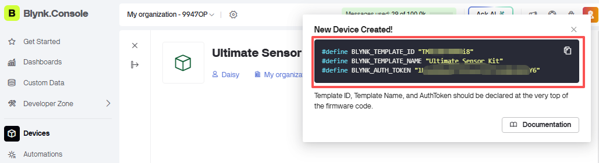

Note
Hello, welcome to the SunFounder Raspberry Pi & Arduino & ESP32 Enthusiasts Community on Facebook! Dive deeper into Raspberry Pi, Arduino, and ESP32 with fellow enthusiasts.
Why Join?
Expert Support: Solve real-life coding problems and technical challenges with our community and team.
Learn & Share: Exchange tips, tutorials, and projects to enhance your skills.
Exclusive Previews: Get early access to new product announcements and sneak peeks.
Festive Promotions and Giveaways: Take part in giveaways and holiday promotions.
👉 Ready to explore and create with us? Click [here] and join today!
1.1 Configuring Blynk
In this chapter we create a Blynk account, one template and one device, and copy the three lines that go at the top of every project sketch. This is done once - all the projects in this kit reuse the same template and the same device.
Note
The Blynk.Console interface is updated from time to time. The screenshots below
were taken in 2026. If a button has moved, look for the field name (such as
AUTH TOKEN) instead of the exact button position.
1. Create an account
Go to BLYNK and click Sign Up in the upper right corner.

Enter your email address, tick the agreement box and click Sign Up.

A message asks you to check your inbox. Open the activation link in your mailbox, then create a password.



2. Create a template
A template is the blueprint: it defines which data the project sends and what the dashboard looks like. Create it once, and add data to it as you work through the projects.
In the left sidebar open Developer Zone, then My Templates, and click + New Template.

Now set up the template.

Fill in the form:
NAME:
Ultimate Sensor KitHARDWARE: ESP32
CONNECTION TYPE: WiFi

Click Done / Save to keep the template.


At this point the template is empty - no datastreams, no events, no dashboard. That is intended: they are added in each project, when you know which data the project needs.
Because every project reuses this one template, each project gets its own virtual pins, so the projects never overwrite each other:
Project |
Virtual pins |
Used for |
|---|---|---|
Flame Alert System |
V0 |
flame sensor value |
Intrusion Alert System |
V1 - V2 |
away mode, status text |
Plant Monitor |
V3 - V6 |
temperature, humidity, soil, LED |
Remote Relay Controller |
V7 |
relay state |
Auto Watering System |
V8 - V10 |
moisture, threshold, auto mode |
You do not have to remember the numbers - every project page repeats the pins it uses.
Note
Every datastream has two names, and Blynk uses them for different things:
DATASTREAM NAME - the technical name, for example
away_mode. This is what the API and MQTT see, and it is written in lower case with underscores.DISPLAY NAME - what the widgets and dashboards show, for example
Away Mode. Blynk fills it in for you by capitalising each word and replacing the underscores with spaces.
That is why a widget ends up reading Away Mode (V1) even though the datastream is
called away_mode. The project pages below name the widget by its display name,
because that is the text you will actually see on screen.
3. Create a device
A template on its own has no auth token - a device has. The device is the actual board, and it inherits the template.
In the left sidebar click Devices, then + New Device.

Choose From template.

Select the template Ultimate Sensor Kit, give the device a name, and click Create.

A New Device Created! window pops up with the three lines you need.

Copy them exactly - one wrong character and the board never connects.
#define BLYNK_TEMPLATE_ID "TMPL..." #define BLYNK_TEMPLATE_NAME "Ultimate Sensor Kit" #define BLYNK_AUTH_TOKEN "..."
Note
If you close that window, the same information is available again in Devices -> your device.
The token belongs to the device, not to the template. Adding datastreams to the template later does not change the token, so the sketches keep working.


The template and the device are ready. The next chapter installs the two libraries the sketches need.